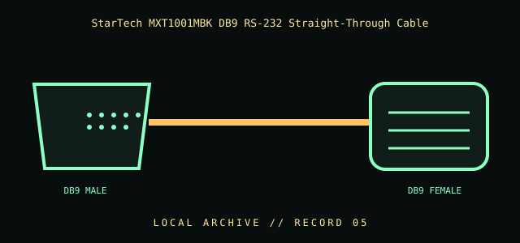

[ INDIVIDUAL COMPONENT // CABLES & ADAPTERS ]
StarTech MXT1001MBK DB9 RS-232 Straight-Through Cable
A shielded serial extension cable with a straight-through wiring arrangement for compatible RS-232 equipment. Its gender and wiring must match the device ports and required signal path.

IDENTIFICATION / SAFETY: Match the complete part number, connector direction, host requirements, and revision to manufacturer documentation. A matching connector shape is not proof of protocol or electrical compatibility.
Specifications
| Catalog subcategory | Serial and converter cables |
|---|---|
| Catalog identity | StarTech.com MXT1001MBK, 1 m DB9 RS-232 male-to-female straight-through cable |
| Protocol / standard | StarTech model MXT1001MBK; DB9 (DE-9) male-to-female; straight-through RS-232 wiring; 1 m per manufacturer product information. |
| Connector ends | DB9 MALE → DB9 FEMALE; direction and gender are specified where the manufacturer source verifies them. |
Compatibility & electrical hazards
A straight-through cable is not a null-modem/crossover lead. It does not convert voltage levels or protocol. Verify both devices use compatible RS-232 pin assignments, DTE/DCE roles, connector gender, and control-signal requirements; a DB9 shell alone does not establish compatibility.
Archival & handling notes
Preserve model and length markings. Before reuse, inspect pins for bends/corrosion and check continuity with a documented pin map; label it clearly as straight-through to prevent accidental substitution for a null-modem cable.
For collection records, photograph both connector faces and all labels; record manufacturer, complete SKU, revision, provenance, condition, and the source document used for identification. Do not apply power to an unidentified or damaged cable.
Sources & further reading
- StarTech — MXT1001MBK 1 m straight-through DB9 RS-232 cableManufacturer identifies connector genders, length, and straight-through wiring.
- TIA — Standards informationStandards body source; consult the applicable TIA-232 edition for interface requirements.
Source values are limited to the linked manufacturer or standards documentation. Features not stated there are intentionally left unspecified; confirm the exact cable revision and host-device manuals before use.